General
1Una varilla, de masa despreciable y longitud 1 m, tiene en sus extremos sendas masas de 1 kg y está girando alrededor de un eje que pasa por su punto medio con velocidad 100 r.p.m. Si las masas se acercasen hasta situarse a 10 cm del eje ¿cual sería la velocidad angular de la varilla?
Solución
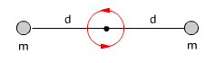 |
L = I·ω |
Conservación del momento angular 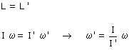 |
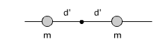 |
L' = I'·ω' |
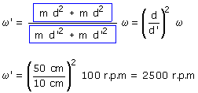
La varilla girará en el mismo sentido que al principio pero más despacio
Veamos que ha pasado con la energía cinética:
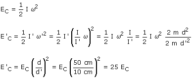
La energía cinética es 25 veces mayor cuando los bloques están cerca del eje
Este aumento de energía indica que algún agente exterior ha hecho trabajo para acercar los bloques al eje de rotación. Aunque hay fuerza exterior, el momento angular se conserva porque dicha fuerza no tiene momento ya que actua en dirección radial
2Una rueda gira a 500 r.p.m. alrededor de un eje. Se coloca encima una segunda rueda idéntica. ¿Cuál será la nueva velocidad del conjunto?. ¿Se ha conservado la energía cinética?
Solución
 |
L = I·ω |
Conservación del momento angular
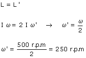 |
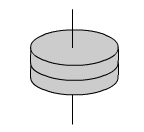 |
L' = (I + I)·ω' |
El conjunto de las ruedas acopladas girará en el mismo sentido giraba la primera rueda pero más lento
Veamos que ha pasado con la energía cinética:
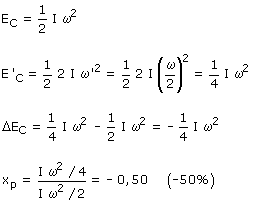
Se ha perdido la mitad de la energía cinética
3Un disco de está
girando cuando se le acopla otro disco inicialmente en reposo. Sabiendo
que en el proceso se pierden 15 J de energía cinética calcula
la velocidad inicial con que giraba el primer disco y la velocidad final
del conjunto
Momentos de inercia de los discos respecto al eje común: 0.016
kg·m2, 0.06 kg·m2
Solución
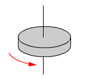 |
L = I1·ω |
Conservación del momento angular 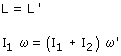
|
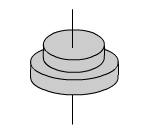 |
L' = (I1 + I2)·ω' |
Cálculo de la energía cinética perdida:
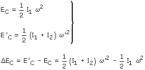
Combinando la conservación del momento angular con la expresión de la energía cinética perdida resulta un sistema con dos incógnitas: ω, ω'
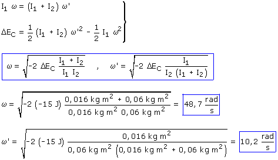
4Un disco A, m1 = 1.5 kg, R1 = 20 cm, gira con velocidad angular 5 rad/s en el sentido de las agujas del reloj, otro disco B, m2 = 2 kg, R2 = 10 cm, gira con velocidad angular 10 rad/s en sentido contrario al de las agujas del reloj. Se acopla el disco B sobre el A, determina: la velocidad angular del conjunto, especificando su sentido, y la energía cinética perdida en el acoplamiento
Solución
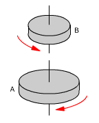 |
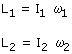 |
Conservación del momento angular 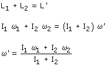 |
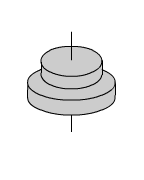 |
|
Sustituyendo valores:
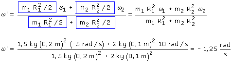
El conjunto de los discos acoplados girará en el sentido de las agujas del reloj
Cálculo de la energía cinética perdida:
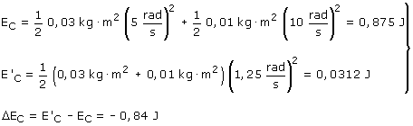
5Una varilla recta de 1 m de longitud y 200 g de masa tiene un eje horizontal perpendicular por su centro se encuentra en reposo en posición horizontal. Desde una altura de 50 cm por encima de la varilla se deja caer sobre ella una bola de plastilina de 40 g que queda pegada a la varilla a 20 cm de su centro. Determina la velocidad angular de la varilla y la lineal de la bola un instante después del choque
Solución
Velocidad de la bolita al llegar a la varilla:

El sistema no esta aislado en traslación
porque la reacción del eje impide el desplazamiento de la varilla
al recibir el impacto. El momento lineal no se conserva
El sistema sí está aislado en rotación porque el
momento de la reacción del eje es nulo. El momento an-gular se
conservará
 |
Este momento angular es positivo |
Conservación del momento angular:
Esta velocidad angular será positiva |
 |
|


La varilla girará con velocidad 1.37 rad/s en sentido antihorario
La bola incrustada en la varilla recorre una circunferencia de radio 20 cm, su velocidad lineal será:

6Una bala, m = 10 g, moviéndose a 350 m/s, incide tangencialmente en una rueda de bicicleta, R = 30 cm, que puede girar alrededor de un eje horizontal y cuyo neumático, lleno de arena, tiene una masa M = 5 kg. Determina la velocidad angular de la rueda tras el choque sabiendo que la bala queda in-crustada en el neumático
Solución
El sistema no esta aislado en traslación
porque la reacción del eje impide el desplazamiento de la rueda
al recibir el impacto. El momento lineal no se conserva
El sistema sí está aislado en rotación porque el
momento de la reacción del eje es cero. El momento angular
se conservará
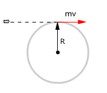 |
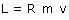 |
Conservación del momento angular 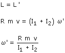 |
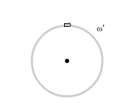 |
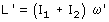 |
Sustituyendo los momentos de inercia:
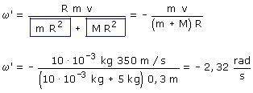
La rueda empezará a girar en el sentido de las agujas del reloj
7Un disco A, m1 = 1.5 kg, R1 = 20 cm, gira con velocidad angular 5 rad/s en el sentido de las agujas del reloj, otro disco B, m2 = 2 kg, R2 = 10 cm, gira con velocidad angular 10 rad/s en sentido contrario al de las agujas del reloj. Se acopla el disco B sobre el A, determina: la velocidad angular del conjunto, especificando su sentido, y la energía cinética perdida en el acoplamiento
Solución
Conservación del momento angular |
||
|
Sustituyendo valores:
El conjunto de los discos acoplados girará en el sentido de las agujas del reloj
Cálculo de la energía cinética perdida:
8Un payaso de circo gira sobre un taburete dando una vuelta por segundo. Tiene los brazos estirados de forma que las manos quedan a 75 cm del eje de giro y en cada una sostiene una bola de 4 kg. Si el momento de inercia de su cuerpo es 1 kg·m2 ¿qué velocidad de giro adquirirá al pegar los brazos al cuerpo?
Solución
 |
L = I·ω |
Conservación del momento angular
|
 |
L' = I'·ω' |

Si I0 es el momento de inercia del payaso con los brazos pegados al cuerpo el momento de inercia con los brazos extendidos será: I0 + m·d2 + md2 (Los momentos de inercia respecto al mismo eje son adi-tivos)

El payaso girará en el mismo sentido que al principio pero más rápido